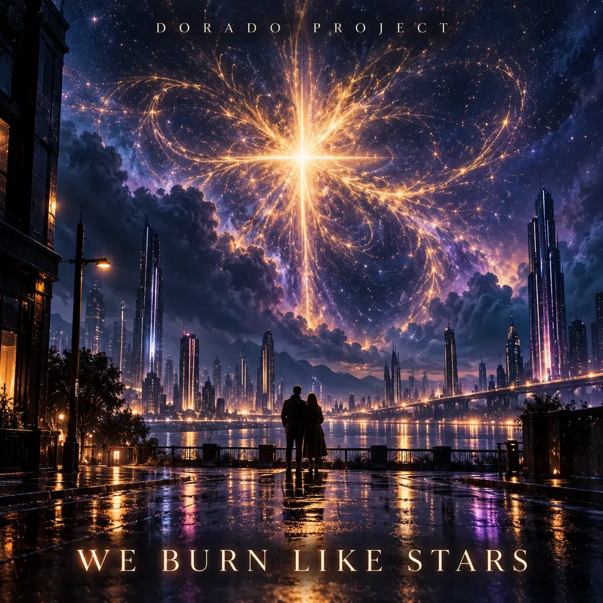

IN PRODUCTION · CINEMATIC SYNTH-SOUL
We Burn Like Stars
Neo-futuristic pop / Cinematic synth-soul
A cinematic synth-soul anthem about finding love and staying alive in a cold digital world. Warm analog bass, grand piano and a soaring vocal choir turn haunting nostalgia into euphoria.
Spotify link to follow when the track is available.